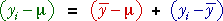
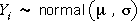
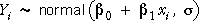
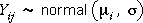
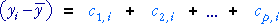
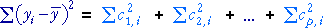
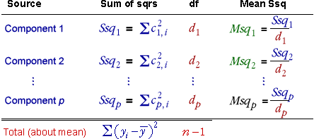
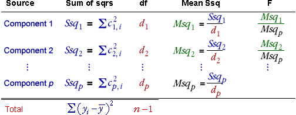

Review of sums of squares around the population and sample mean
Individual differences of values from the population mean can be split,

The corresponding sum of squares satisfy a similar equality,

Since the population mean, µ, is an unknown value in practice, this partition of the total sum of squares is of little practical use.
However the total sum of squares about the sample mean can often be split into components in a similar way.
Normal models
You have already encountered several models for data based on normal distributions:
|  | for the i'th value in the data set. |
|  | for the i'th value in the data set. |
|  | for the j'th value in group i. |
Splitting the sum of squares about the sample mean
For these and many other models based on normal distributions, the difference between each value and the sample mean can be further split into two or more components,

and their sums of squares are similarly related:

It is conventional in these models to call the sum of squares on the left the total sum of squares — strictly it is the sum of squares about the sample mean.
Analysis of variance table
These component sums of squares can be again arranged in a table called an analysis of variance (anova) table.

When some assumptions are made about the normal model underlying the data, each sum of squares has a chi-squared distribution with a number of degrees of freedom that depends on how the components are defined.
The mean sums of squares are therefore all estimates of σ2 if these same assumptions hold.
F ratios and hypothesis tests
In practice, we assume that the data arise from some normal model.
The components are defined in such a way that each is sensitive to a different characteristic of the model.
The component sums of squares can therefore be used as a basis for testing whether the model has these characteristics.
Tests are done by comparing pairs of mean sums of squares. An unusually large ratio indicates that the model does not have some characteristic. A column of F-ratios of mean sums of squares (usually compared to the final one in the table) is the basis of the test and a p-value is found by comparing the F-ratios with an F distribution.

Don't worry if you don't see the significance of this page at present.
Component sums of squares, their interpretation and their use in testing will become clearer after you have examined a few specific examples.